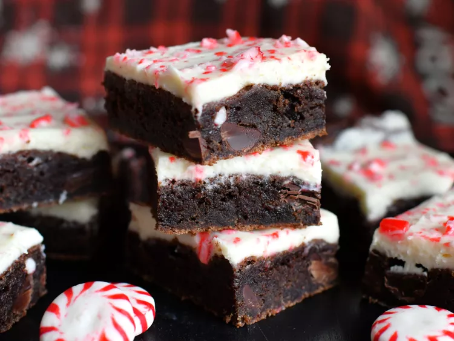

Mocha Cookie

These fudgy peppermint mocha cookie bars are infused with peppermint and espresso flavors, making them reminiscent of a popular holiday-time drink.
Ingredients
- 1/2 cup white chocolate chips
- 1/3 cup heavy cream
- 1/8 teaspoon peppermint extract
- 2 tablespoons instant espresso powder
- 2 tablespoons hot water
- 1 cup all-purpose flour
- 1/4 cup unsweetened cocoa powder
- 1/2 teaspoon salt
- 1/2 teaspoon baking soda
- 1/2 teaspoon baking powder
- 1/2 cup unsalted butter, softened
- 1/2 cup white sugar
- 1/4 cup firmly packed dark brown sugar
- 1 large egg, at room temperature
- 1 1/2 teaspoons vanilla extract
- 1/2 teaspoon peppermint extract
- 1/2 cup dark chocolate chips
- 1/4 cup finely crushed peppermint candy canes, plus more for decorating
Steps
- Place white chocolate chips, heavy cream, and 1/8 teaspoon peppermint extract into a microwave-safe bowl. Microwave at 50% power in 30 second intervals, stirring after each interval, until melted and combined. Place mixture, uncovered, in the refrigerator until completely chilled, about 1 hour.
- Preheat the oven to 350 degrees F (175 degrees C). Line an 8x8-inch square pan with enough parchment paper to have overhang on all sides.
- In a small bowl or measuring cup, stir espresso powder and hot water together until dissolved.
- In a medium bowl, whisk together flour, cocoa powder, salt, baking soda, and baking powder until thoroughly combined.
- Beat butter, white sugar, and brown sugar together in a large bowl until light and fluffy. Add in egg and beat until thoroughly combined. Add in espresso mixture, vanilla extract, and 1/2 teaspoon peppermint extract and mix until combined. Pour in half of the flour mixture and mix until just combined. Add in remaining flour mixture and mix until just combined—dough will be somewhat thick. Stir in chocolate chips and crushed candy canes. Spread dough into the prepared pan in an even layer.
- Bake in the preheated oven until the bars look just set, 25 to 30 minutes. Remove from the oven and allow to cool completely in the pan, about 30 minutes.
- Remove chilled white chocolate mixture from the fridge. Whip on medium-high speed with an electric mixer until mixture holds stiff peaks. Spread white chocolate frosting in a thin even layer over the top of the cooled bars and sprinkle with additional crushed candy canes. Cut into 16 bars.